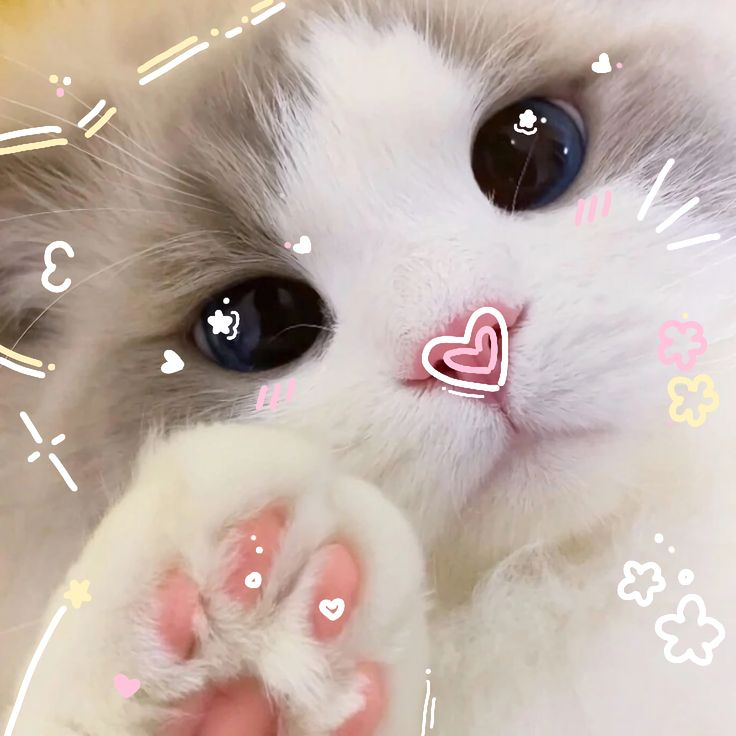
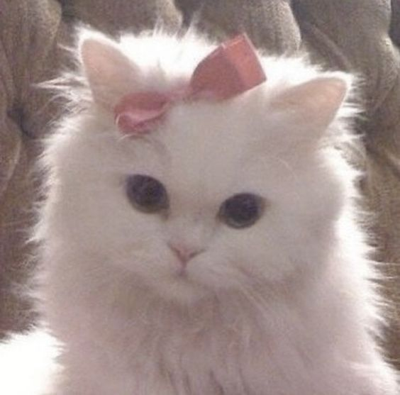
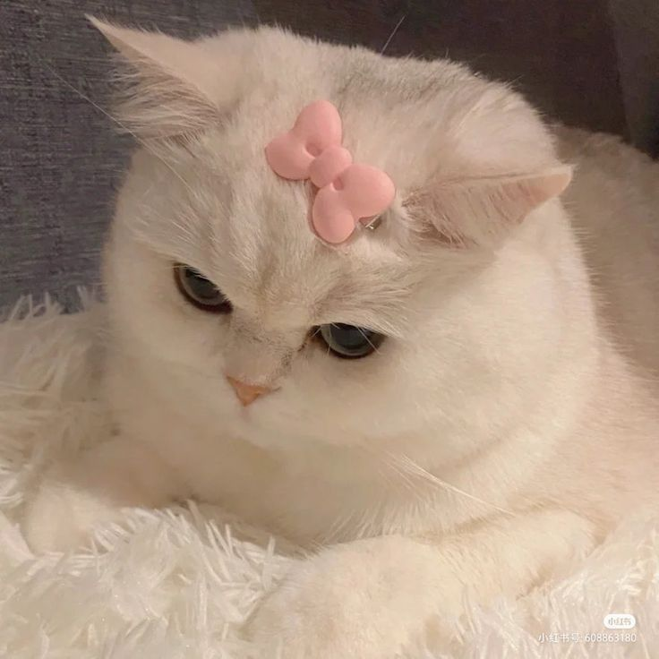
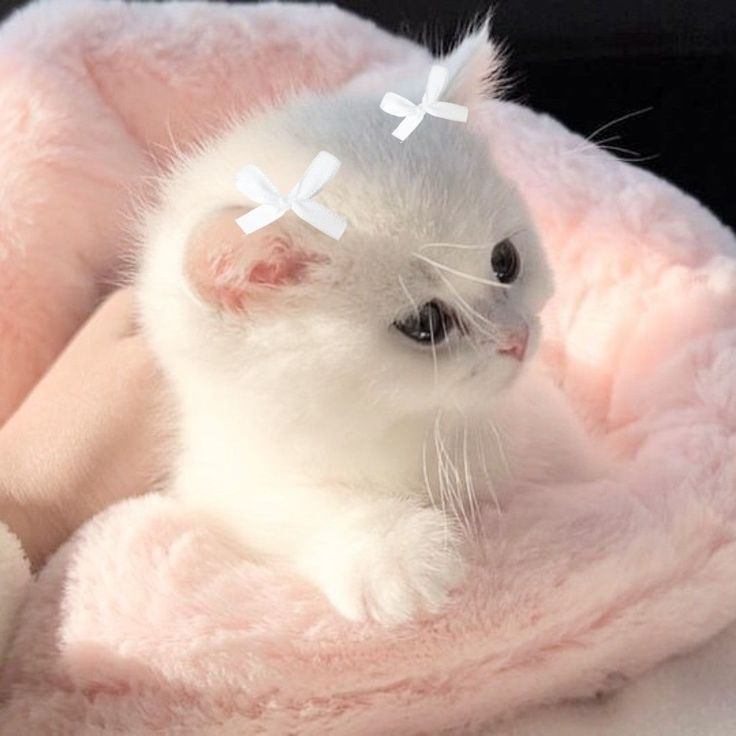
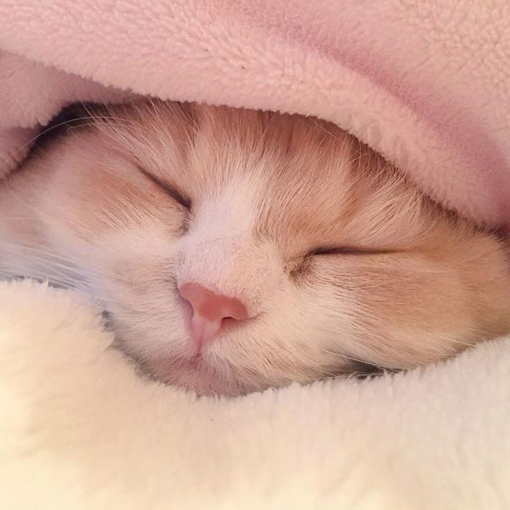
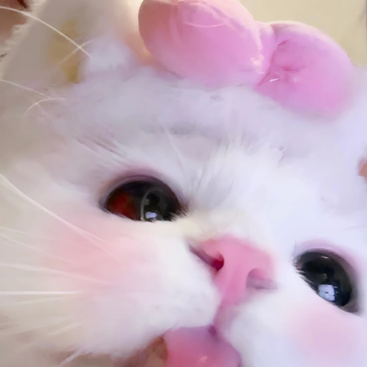
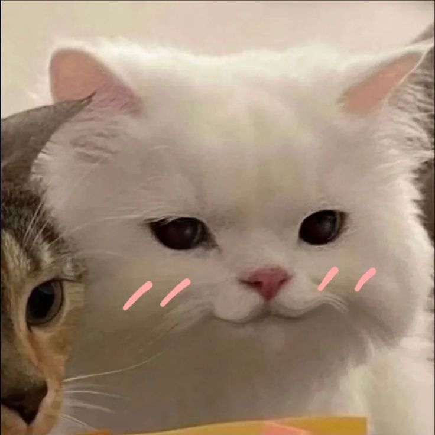

Welcome, Purrfect Friends!
Step into a world of fluff, whiskers, and endless cuteness!
Cutie Patootie Gallery






Did You Know?
Loading a fun cat fact... 🐾
Japanese Wisdom
猫の恩返し
A cat never forgets a kindness.